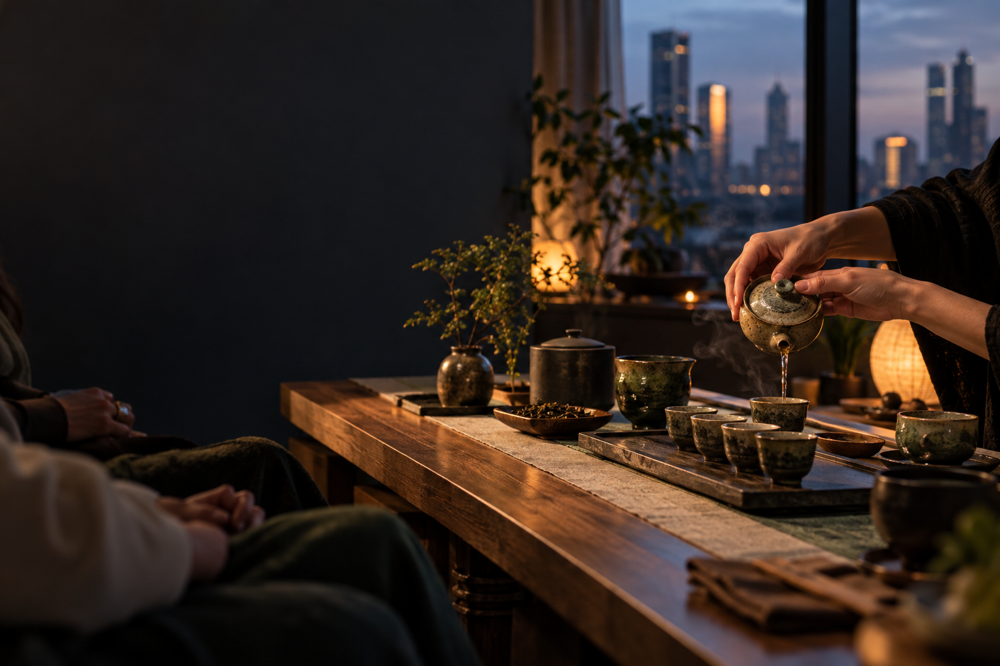
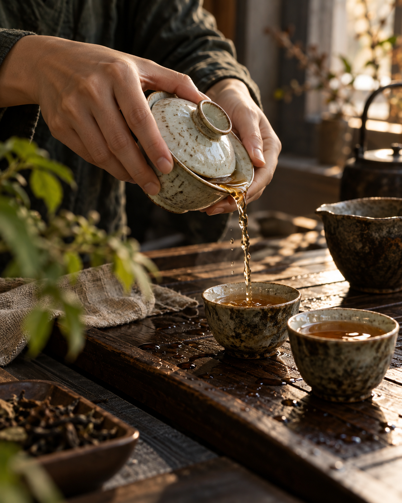

Андрей
Заваривает чай и рассказывает о нём без лекционного тона: как выбрать, что почувствовать в аромате и почему один и тот же лист меняется в разных проливах.

Китайский чай, семь мест за столом и живой разговор. Приходите таким, какой вы есть: знание чайных традиций не требуется.
На столе — чайник, пиалы и несколько сортов чая. Андрей заваривает, объясняет, что меняется от пролива к проливу, и оставляет место для ваших вопросов. Молчать тоже можно.
Как мы смотрим на чай
Начало — в первом проливеМы знакомимся, пробуем несколько чаёв и замечаем, как меняются вкус, аромат и разговор. Можно задавать вопросы, делиться впечатлениями или просто наслаждаться паузой.
Каждая встреча камерная. Точную программу, дату и стоимость мы публикуем в анонсах канала.
Несколько китайских чаёв, разные проливы и разговор без обязательной темы. Хороший выбор для первого визита.
Пьём чай и обсуждаем идеи Дао Дэ Цзина — через обычные ситуации, вопросы и собственный опыт.
Иногда к чаепитию добавляются дыхание, звук или работа с вниманием. Что именно будет — пишем в анонсе.
Для нас чай — доступный способ вернуться к тому, что происходит сейчас. Без экзамена на знание традиций и без требования чувствовать что-то особенное.
Тепло пиалы, аромат сухого листа, перемену вкуса от пролива к проливу. Внимание начинается с простых ощущений.
Уважение к гостю, доброжелательность и разговор, которому не нужно никуда торопиться.
После церемонии этот ритм можно взять с собой: иногда достаточно одной чашки без телефона.
«Не нужно ничего знать о чае заранее. Можно просто сесть за стол и попробовать».
Вопросы приветствуются. Тишина тоже.
На встрече вы будете не с «ведущими мероприятия», а с людьми, которые сами любят чай и разговоры о нём.
Заваривает чай и рассказывает о нём без лекционного тона: как выбрать, что почувствовать в аромате и почему один и тот же лист меняется в разных проливах.
Помогает гостям освоиться и ведёт авторские встречи, в которых чай соединяется с практиками внимания и телесного присутствия.
Небольшая подборка материалов из нашего Telegram-канала — о практике, культуре и исследованиях.
Выберите интересный формат и оставьте пожелание по дате. Эта анкета пока работает как демонстрация: она не отправляет и не сохраняет ваши данные. Для настоящей записи напишите нам в Telegram.
Написать организаторуФорма показывает, как будет устроена запись после подключения обработки заявок.
Если вашего вопроса здесь нет, напишите организатору. Мы расскажем, какая встреча подойдёт именно вам.
Нет. Мы знакомим с чаем простым языком. Можно прийти впервые, задавать любые вопросы или просто пробовать и наблюдать.
Конечно. Небольшая группа помогает познакомиться без необходимости постоянно поддерживать разговор.
Обычно несколько часов. Точное время начала и окончания указано в анонсе каждой встречи.
Нет. У нас есть отдельные чайные церемонии и авторские форматы. Дыхание, звук или другие практики указаны в описании конкретного события.
Актуальные условия мы публикуем в Telegram-канале. Для уточнения и записи напишите @midkam.